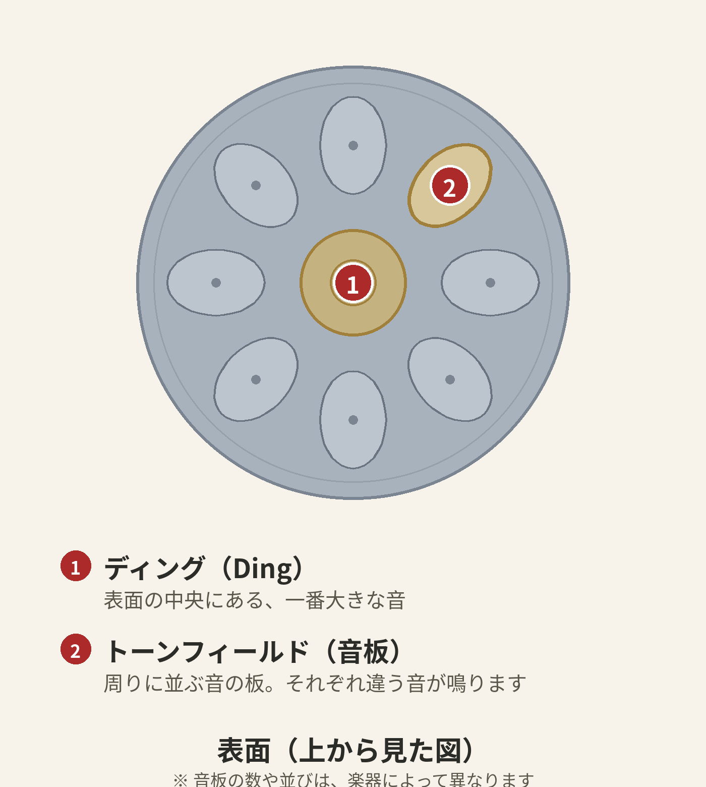
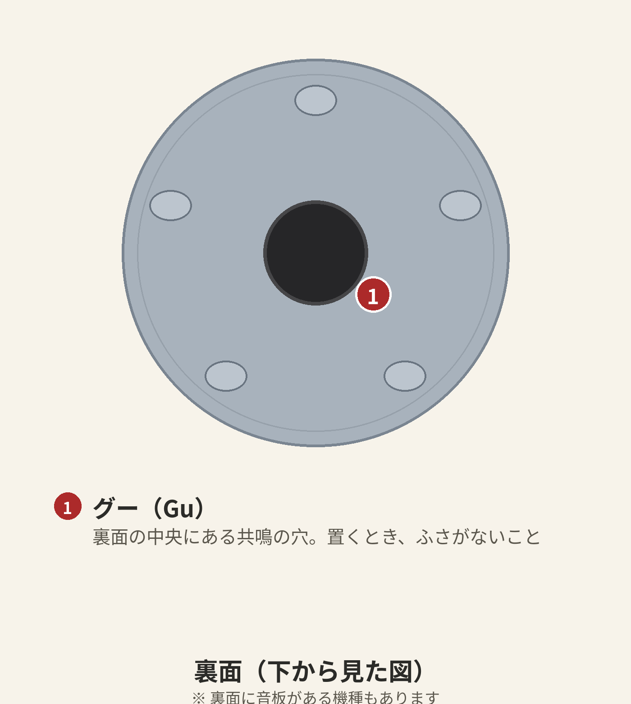

ハンドパン・レッスン 第1章「楽器を知る」
はじめに
このレッスンは、教室に通わず、我流でハンドパンを始めた人のために書いています。筆者自身がそうでした。楽器は届いた。でも、どこをどう触ればいいのか、置き方はこれで合っているのか、誰にも聞けずに行き詰まった経験があります。
だからこの連載では、遠回りになりやすいポイントを先に潰していきます。第1章で扱うのは「楽器を知る」こと。まだ音は出しません。それでも、この章があとの上達速度を決めます。
1. 部位の名前をおぼえる
ハンドパンの部位には名前があります。名前が分かると、動画や記事の説明が一気に分かるようになります。

- ディング（Ding）：表面の中央にある、一番大きな音。多くの楽器で、そのスケールの中心になる音です。
- トーンフィールド（音板）：ディングの周りに並ぶ、ひとつひとつの音の板。軽く触れると、それぞれ違う音が鳴ります。楽器によって数は違い、表面だけでなく裏面に音板がある機種もあります。

- グー（Gu）：裏面の中央にある大きな穴。音の出口であり、共鳴の要です。ここをふさぐと、音がこもって響きが死んでしまいます。置き方の章で一番大事なポイントです。
この3つだけ、まず覚えてください。「ディングを中心に、トーンフィールドが並び、裏にはグーがある」。それがハンドパンの全体像です。
コラム：なぜ、こんな音がするの？
ハンドパンの音が幻想的に聞こえるのには、理由があります。ひとつのトーンフィールドには、実は「基音」と、その上の「オクターブ」「完全5度」といった倍音が一緒に調律されていて、一打で複数の音が重なって響きます。さらに、裏面のグーから内部の空気が共鳴して、低音をふくよかに押し上げます。だから単音でも、和音のような厚みが生まれるのです。
2. 置き方 — グーをふさがない
演奏の基本姿勢は、膝の上に楽器を載せる形です。
- グー（裏面の穴）を下に向け、膝やクッションで穴をふさがないようにします。脚のあいだに穴が来るように置くと、共鳴が逃げて豊かに響きます。
- 楽器は水平ではなく、少しだけ手前に傾けるのが目安です。遠くの音板にも手が届きやすくなります。
- 床やテーブルに直接置くのは避けましょう。響きが止まるうえ、傷の原因になります。専用スタンドや、輪の形のクッション（リングクッション）の上で演奏する人もいます。
置き方が決まると、音の響きが変わります。「なんだか音がこもる」と感じたら、まずグーがふさがっていないか確かめてください。初心者の「音が出ない」の多くは、叩き方ではなく置き方の問題です。
3. 構えと姿勢 — 力まない
- 椅子に深く腰かけ、背筋を軽く伸ばします。
- 肩と腕の力は抜いてください。ハンドパンは「叩く」楽器に見えますが、力で鳴らす楽器ではありません（詳しくは第2章で）。
- 楽器との距離は、腕を自然に伸ばして指が届く位置。近すぎると窮屈になり、遠すぎると肩が上がります。
良い姿勢は、良い音の前提です。疲れてきたら、それは力んでいるサイン。いったん手を止めて、呼吸をひとつ置きましょう。
4. お手入れの基本
ハンドパンは金属の楽器です。長く良い音で付き合うために、基本は3つだけ。
- 演奏後は、柔らかい布で表面を拭く。手の皮脂や汗が残ると、錆（さび）の原因になります。
- 直射日光と高温多湿を避ける。車の中など、高温になる場所に置きっぱなしにしないでください。
- 保管はケースの中で。落下やぶつけは、音の狂いに直結します。
オイルでの手入れを行う製品もありますが、楽器の素材や仕上げによって適したものが変わります。メーカーや販売店の案内に沿ってください。
この章のチェックポイント
- ディング、トーンフィールド、グー — 3つの部位を指さして言える
- グーをふさがない置き方ができる
- 演奏後に布で拭く習慣がついた
次章（第2章「最初の音」）では、いよいよ音を出します。合言葉は「叩かない。触れて、すぐ離す」。強く叩くほど音が悪くなる——多くの初心者が最初につまずくポイントを、丁寧にほどいていきます。